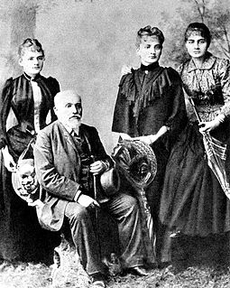
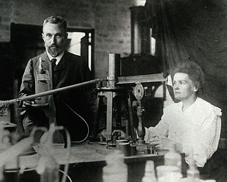

| Maria Skłodowska was born in Warsaw, in Congress Poland in the Russian Empire, on 7 November 1867, the fifth and youngest child of well-known teachers[11] Bronisława, née Boguska, and Władysław Skłodowski.[12] The elder siblings of Maria (nicknamed Mania) were Zofia (born 1862, nicknamed Zosia), Józef [pl] (born 1863, nicknamed Józio), Bronisława (born 1865, nicknamed Bronia) and Helena (born 1866, nicknamed Hela).[13][14]
On both the paternal and maternal sides, the family had lost their property and fortunes through patriotic involvements in Polish national uprisings aimed at restoring Poland's independence (the most recent had been the January Uprising of 1863-65). This condemned the subsequent generation, including Maria and her elder siblings, to a difficult struggle to get ahead in life. Maria's paternal grandfather, Józef Skłodowski [pl], had been principal of the Lublin primary school attended by Bolesław Prus,[16] who became a leading figure in Polish literature. |

|
|
In December 1903 the Royal Swedish Academy of Sciences awarded Pierre Curie, Marie Curie, and Henri Becquerel the Nobel Prize in Physics,[44] "in recognition of the extraordinary services they have rendered by their joint researches on the radiation phenomena discovered by Professor Henri Becquerel."[23] At first the committee had intended to honour only Pierre Curie and Henri Becquerel, but a committee member and advocate for women scientists, Swedish mathematician Magnus Gösta Mittag-Leffler, alerted Pierre to the situation, and after his complaint, Marie's name was added to the nomination.[45] Marie Curie was the first woman to be awarded a Nobel Prize.[23]
Curie and her husband declined to go to Stockholm to receive the prize in person; they were too busy with their work, and Pierre Curie, who disliked public ceremonies, was feeling increasingly ill.[43][45] As Nobel laureates were required to deliver a lecture, the Curies finally undertook the trip in 1905.[45] The award money allowed the Curies to hire their first laboratory assistant.[45] Following the award of the Nobel Prize, and galvanized by an offer from the University of Geneva, which offered Pierre Curie a position, the University of Paris gave him a professorship and the chair of physics, although the Curies still did not have a proper laboratory.[23][40][41] Upon Pierre Curie's complaint, the University of Paris relented and agreed to furnish a new laboratory, but it would not be ready until 1906.[45]
|

|